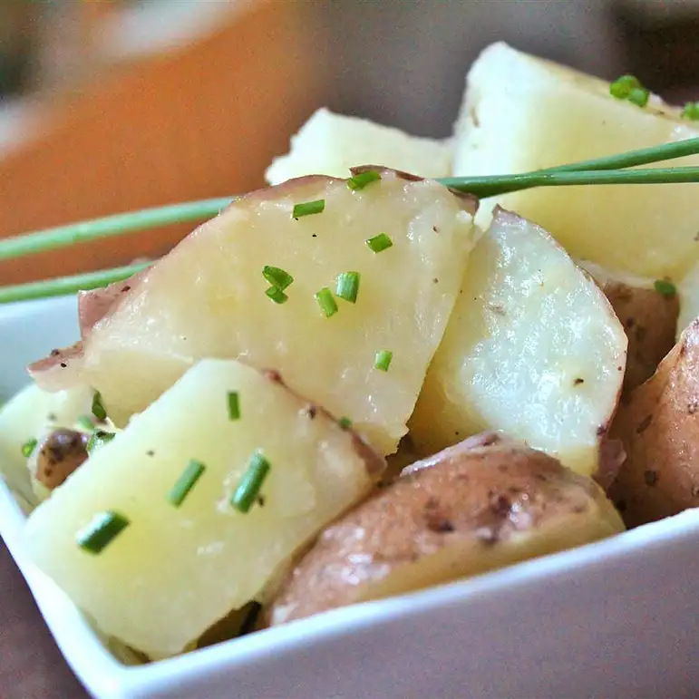

Boiled Potato

Description
Simple but very good. Substitute new potatoes for the red if you prefer.
- Butter
- Small potatoes
- Salt $ Pepper
- Chives
- Place butter in a serving bowl.
- Place potatoes into a large pot and cover with salted water by 1 inch; bring to a boil. Reduce heat to medium-low and simmer until tender, 10 to 15 minutes. Drain and cool until potatoes can be handled; cut potatoes in half.
- Place potatoes into serving bowl with butter, season with salt and black pepper, and toss with chives until potatoes are coated.